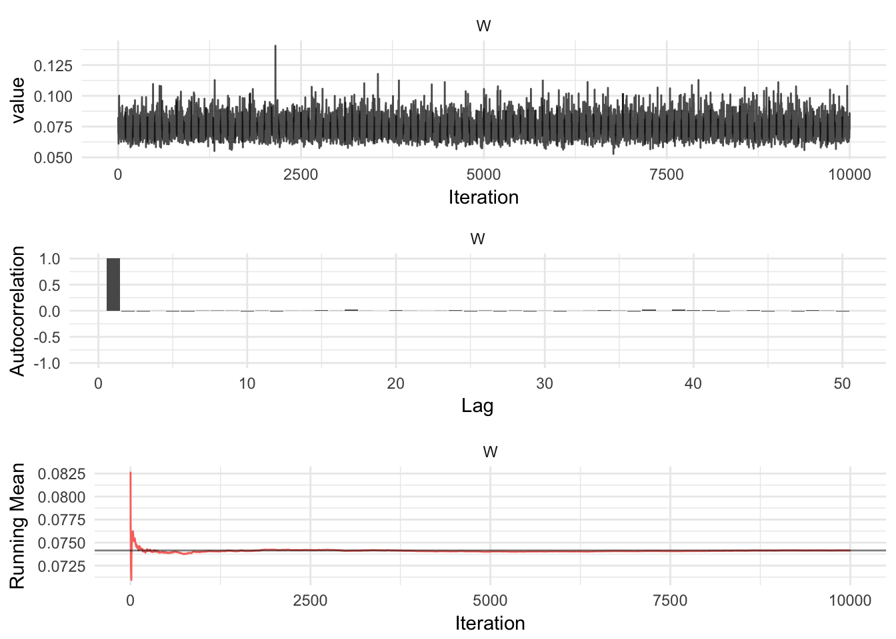
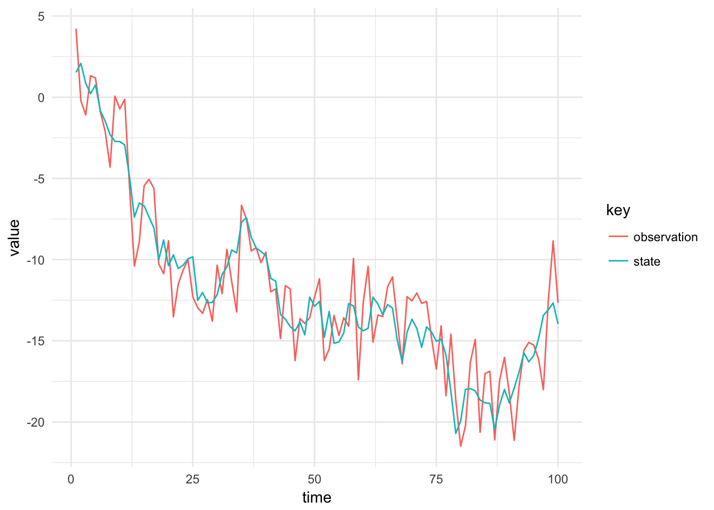

The particle filter can be used for non-linear and non-Gaussian state space models, such as DGLMs. A general DGLM is given by:
\[\begin{align*} Y_t &\sim p(y_t | g(F_tx_t), \theta) \\ X_t &= G_tX_{t-1} + w_t, \qquad w_t \sim \mathcal{N}(0, W), \\ X_0 &\sim \mathcal{N}(m_0, C_0). \end{align*}\]
Where \(p(y_t | F_tx_t, \theta)\) is a Exponential Family distribution, with optional static parameter \(\theta\).
In a DGLM, the latent-state is Gaussian and thus permits a Gibbs Sampling scheme to determine the value of the system noise covariance matrix.
In order to construct a Gibbs Sampler, a value of the state must be sampled conditional on the values of the parameters. This is what the Particle Gibbs algorithm does. This is the non-linear, non-Gaussian equivalent of Forward-Filtering, backward sampling.
In order to sample from the full-conditional distribution for \(W\), we need to be able to sample a single value of the state. In a DLM, Forward Filtering Backward Sampling (FFBS) is used, but in a DGLM the Kalman Filter can’t be used as the observation distribution is non-Gaussian. The solution to this is to use a Particle Filter to sample a value of the state, for this we can use Particle Gibbs Sampling (PG) @ref(doucet11). The PG algorithm for this model is summarised below:
Initialise Assume we have a state path from a previous run of the particle filter, \(x_{0:T}^\prime\) which we condition upon. Then sample \(i = 1,\dots,N-1\) particles from the initial state distribution \(x^i_0 \sim \mathcal{N}(m_0, C_0)\).
If \(t < T\) go to step 2, otherwise sample \(k\) such that \(Pr(k = i) \propto w^i_T\) and set \(x_{0:T}^{\prime} = x_{0:T}^k\)
The output of this algorithm is a single path. This can be used in a Gibbs step to sample the a value of the state.
\[\begin{align*} Y_t|x_t &\sim \textrm{Poisson}(\exp(F_tx_t)), \\ X_t &= G_tX_{t-1} + w_t, \qquad w_t \sim \mathcal{N}(0, W), \\ X_0 &\sim \mathcal{N}(m_0, C_0). \end{align*}\]
Figure @ref(fig:poisson-sims) shows a simulation from the Poisson DGLM.
data = read_csv("../data/poisson_dglm.csv")
data %<>%
gather(key, value, -time) %>%
filter(time > 900)
ggplot() +
geom_line(data = subset(data, key == "state"), aes(x = time, y = value)) +
geom_step(data = subset(data, key == "observation"), aes(x = time, y = value)) +
facet_wrap(~key, scales = "free_y", ncol = 1) +
theme(legend.position = "none")Simulation from the poisson DGLM with \((W, m_0, C_0) = (0.01, 0.0, 1.0)\)
We first sample a path using the Particle Filter, then conditional on that path, we sample a value of the system noise covariance matrix, \(W\), by exploiting the conjugate structure of the model. The state is one-dimensional hence we need to determine the variance, \(W\). The Inverse Gamma distribution is conjugate to the Normal distribution with unknown variance:
\[p(V) = \textrm{InverseGamma}(\alpha, \beta)\]
The likelihood of \(x_t\) is Gaussian, with mean \(G_t \textbf{x}_{t-1}\) and variance \(W\). The posterior distribution of the system noise variance is:
\[\begin{align*} p(W | y_{1:T}, \textbf{x}_{0:T}) &\propto p(x_0) p(W) \prod_{t=1}^Tp(y_t | x_t) p(x_t|x_{t-1}, W) \\ &= W^{-\alpha-1}\exp\left( -\frac{\beta}{W} \right)(2\pi V)^{-T/2} \exp \left\{ -W^{-1} \sum_{t=1}^T(x_t - G_t \textbf{x}_{t-1})^2 \right\} \\ &= W^{-(\alpha + T/2) - 1} \exp \left\{ -\frac{1}{V}\left(\beta + \frac{1}{2}\sum_{t=1}^T(x_t - G_t \textbf{x}_{t-1})^2\right) \right\} \end{align*}\]
The the posterior distribution of the observation variance is the Inverse Gamma distribution:
\[p(V | y_{1:T}, \textbf{x}_{1:T}) = \textrm{InverseGamma}\left(\alpha + \frac{T}{2}, \beta + \frac{1}{2}\sum_{i=1}^T(x_{t-1} - G_t\textbf{x}_{t-1})^2\right).\]
Figure @ref(mcmc-output) shows the MCMC diagnostics for the simulated Poisson example.
iters = read_csv("../data/poisson_dglm_gibbs.csv")
chain = iters %>% mcmc() %>% ggs()
p1 = ggs_traceplot(chain)
p2 = ggs_autocorrelation(chain)
p3 = ggs_running(chain) + theme(legend.position = "none")
gridExtra::grid.arrange(p1, p2, p3, ncol = 1)
Particle Gibbs is sticky, so we use ancestor resampling.
TODO: Describe PGAS algorithm
For a simple example of Particle Gibbs with Ancestor Resampling, we use the simple, illustrative example from Lindsten 2014.
\[\begin{align*} y_t &= x_t + v_t, \qquad v_t \sim \mathcal{N}(0, V), \\ x_t &= x_{t-1} + w_t, \quad w_t \sim \mathcal{N}(0, W), \\ x_0 &\sim \mathcal{N}(m_0, C_0). \end{align*}\]
data = read_csv("../data/first_order_dlm.csv")
data %>%
gather(key, value, -time) %>%
ggplot(aes(x = time, y = value, colour = key)) +
geom_line()